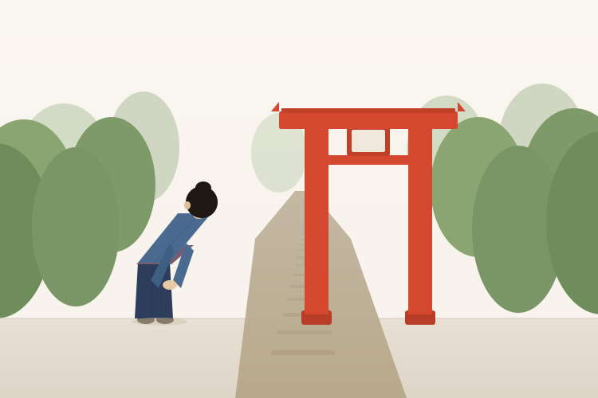
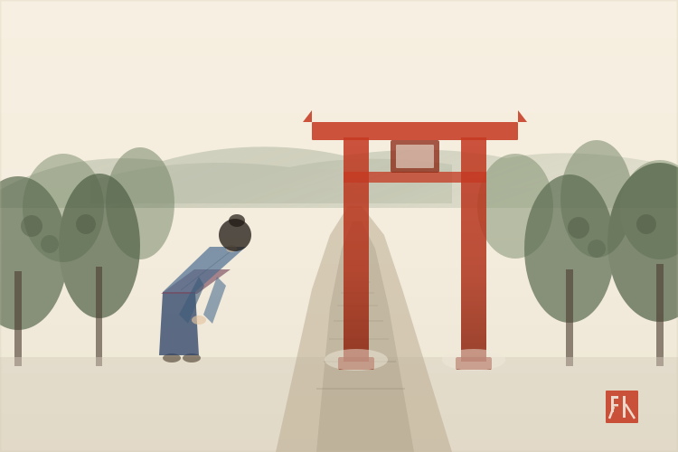
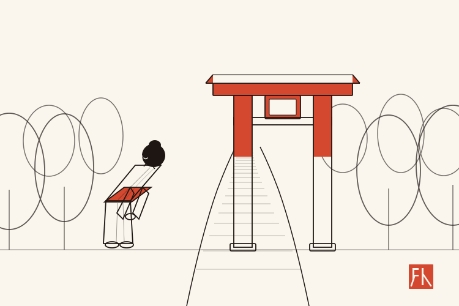

「鳥居の前で一礼する女性」を 3 スタイルで生成。どれを採用するか選んでください。

幾何学的な形状、ソリッドカラー、テクスチャなし。Notion や Headspace 風のクリーンなモダンスタイル。

和紙テクスチャ、にじみ、墨絵風の木々。御朱印帳テーマと最も親和性の高い温かみのあるスタイル。

細い墨線のみのミニマルな線画に、鳥居と帯だけ朱色を入れた上品なスタイル。MUJI / ガイドブック風。
Phase 2 → 選んだスタイルで 3 枚（人物アクション / 道具 / 俯瞰）をパイロット生成